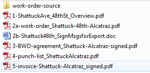

Sign plan workflow
Filing: top level for each bikeway project corridor folder (to begin--changes at project completion)
- Overview map
- Work order overview workbook (from template)
- Sign plan map
- File pre-install field photos, if possible, in a single folder; name folder with corridor and “pre” or similar (e.g. Pre-photos-38th-E12th).
Overview workbook tabs
- Work order cover sheet
- Distances
- Sign removal (if relevant)
- Punch list (if relevant)
Work order development workflow
- For each plan/corridor, create and save a query in Access to generate the work order attachment, named for the corridor.
- Wait to create .pdfs from database or spreadsheet until after all the documents are approved (unless specifically requested to do so).
- Print on draft paper (when possible).
Work order finalization: documents and filing
- After Jason has approved the work order, output .pdfs and other docs referenced on cover sheet (and the cover sheet itself). Combine into single .pdf; delete all component .pdfs
- Move files that were at the top level to a new subfolder called “source.”
- When received, file quote and signed quote at top level.
Installation verification
- Photograph each sign showing the full length of the pole to the top of the sign.
- Get GPS coordinates for each sign using cell phone and GPS Essential application.
- Document any problems (wrong location, too low, too high, wrong message, signs not removed, bad location choice by us) and, if needed, create punch list (tab in Overview workbook).
- Verify punch list work.
- Delete any named queries and reports from Access.
After installation
Photos
- Pre-photos: Review, save any that may be important and name them informatively, delete the rest.
- Post photos: Name by ID number and “.JPG” (e.g. 135.JPG). If there are any really great photos, put a copy (renamed with the bikeway name in the title) in the directory for the next newsletter (\\oakland\pwa\Transportation\Bike-Ped_Program\Outreach\Newsletter).
- Move ID.JPG labeled photos into the database photos folder (\\oakland\pwa\Transportation\Bike-Ped_Program\Projects\Bikeways-signage\SignPhotos )
- If there are any other photos related to the project, review, save any that may be important and name them informatively, delete the rest.
Filing
A completed corridor folder should, generally, have the following documents renamed so they sort in the following order (as shown in the image below):
- 1-overview map
- 2a-completed work order
- 2b-sign messages Word doc
- 3-signed billable work order agreement
- 4/5-punch list (if relevant); invoice (if relevant)
